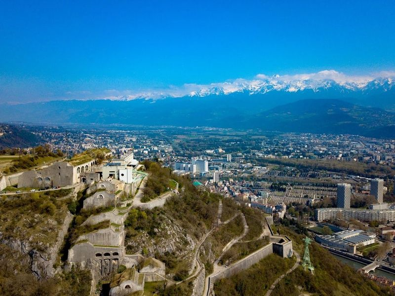
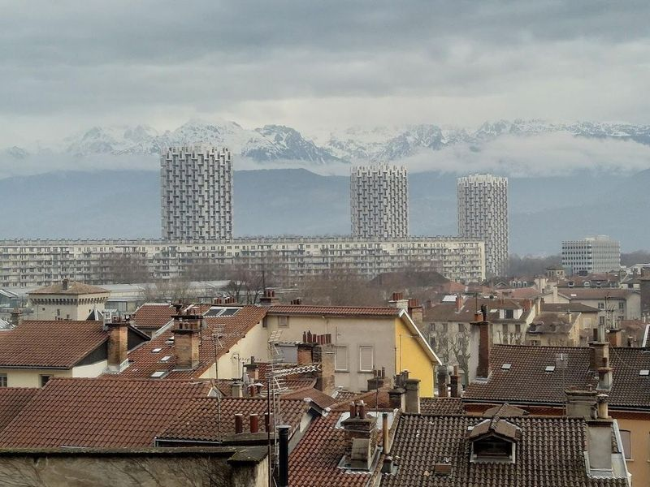
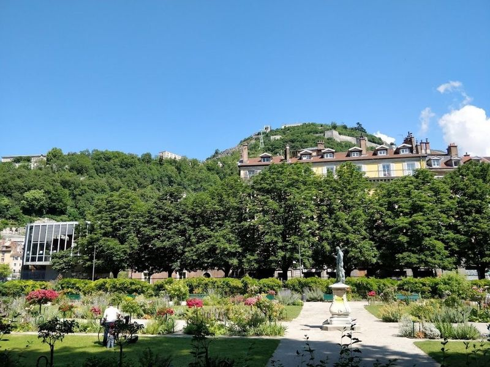
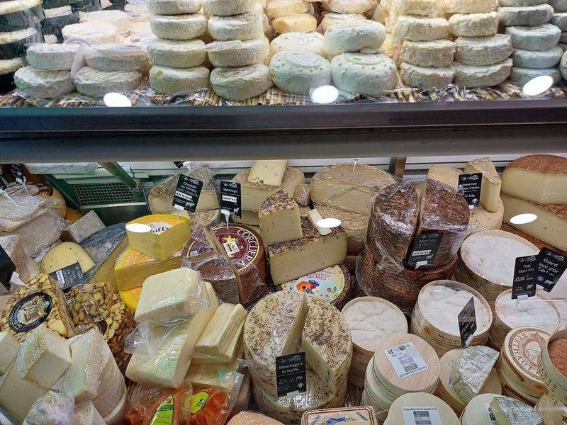
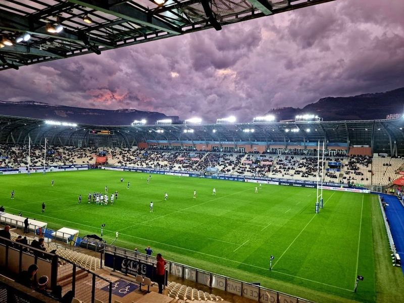
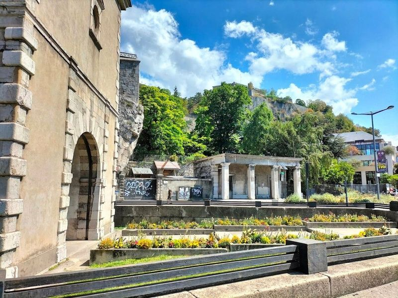
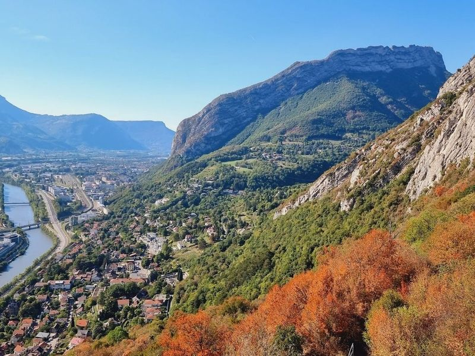
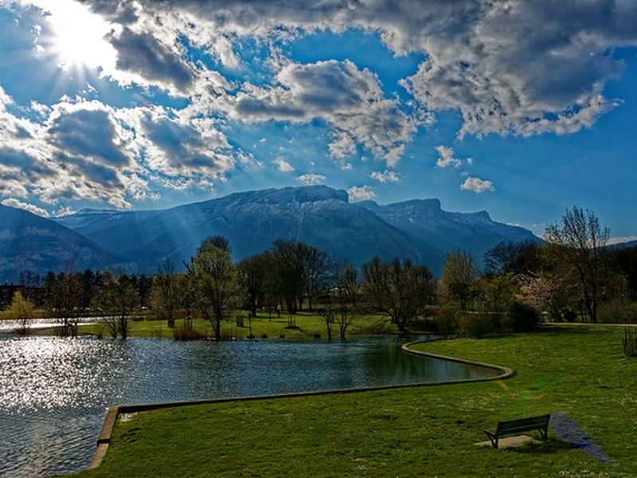
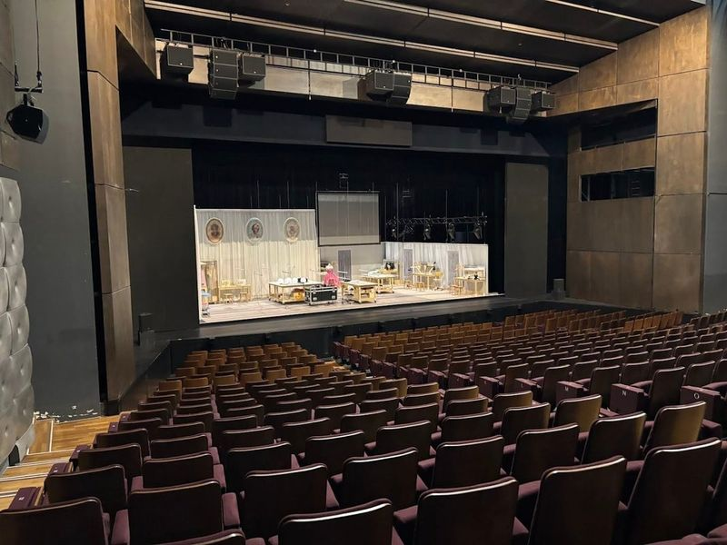
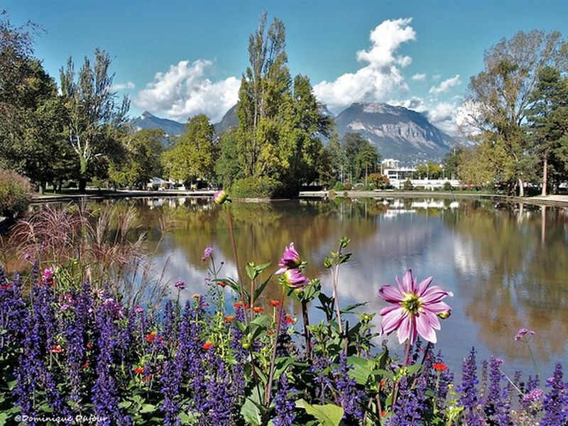

Explore Grenoble
A Brief History
Grenoble developed at the foot of the French Alps where the Isère valley opens toward the Rhône, serving as capital of the Dauphiné after its union with France in 1349. Fortifications of the Bastille hill and later magistrates' courts anchored a city of glove-makers, hydroelectric engineers, and universities. Nineteenth-century industry and the 1968 Winter Olympics expanded suburbs while the historic core retained arcaded streets linking Alpine trade to Mediterranean France.
Attractions Map
Top Sights & Activities

Bastille
The Fort de La Bastille à Grenoble is a 19th-century military fort located on Mount Rachais, overlooking the city of Grenoble. Accessible by a scenic cable car ride, the fortress offers panoramic views of the city and the River Isere. Originally fortified in the 1590s, it features defensive walls and bastions designed to protect the city from mountain invasions.

Fontaine au Lion
in the Place de la Cymaise within the Saint-Laurent district, Fontaine au Lion stands as a powerful emblem of Grenoble. Crafted by Victor Sappey in 1870, this striking fountain features a lion fiercely battling a serpent, symbolizing the Drac and Isère rivers respectively. This artistic representation reflects the historical struggles faced by locals due to flooding from these waterways.

Jardin de Ville
In the heart of Grenoble's historic center lies the Jardin de Ville, a picturesque city park that has been open to the public since 1719. This leafy oasis along the Isere River features a playground, fountain, and bandstand, making it an public space for outdoor concerts during the summer. The park is adorned with century-old trees and is home to various sculptures and monuments, including busts of Jean-Jacques Rousseau and Pierre Baiteux.

Fromagerie Les Alpages
in the heart of Grenoble, Fromagerie Les Alpages is a cheese lover's paradise run by Bernard Mure-Ravaud, a renowned figure in the world of cheese. Since 1984, this shop has been a go-to destination for both connoisseurs and casual enthusiasts. With his son Renaud as his successor, Bernard supplies top restaurants with an impressive selection of cheeses. The shop itself is adorned with brass plaques showcasing its high-quality offerings.

Stade des Alpes
The Stade des Alpes, located in Grenoble, France, is a notable stadium that serves as the home ground for both the Grenoble Foot 38 football club and the FC Grenoble rugby team. This versatile venue caters to both football and rugby enthusiasts alike. Situated approximately 460 meters northeast of Perret tower, the Stade des Alpes boasts an impressive architectural design, particularly evident in its striking roof structure. The stadium's exterior appears well-maintained and visually appealing.

Porte de France
The Porte de France, completed in 1620, is a significant city gate adorned with bas-relief sculptures and a World War I memorial. Situated in the Saint-Laurent district on the right bank of the Isere, it stands alongside the Saint-Laurent gate and footbridge. This Renaissance structure is a attraction in Grenoble's city center and offers free access to travellers.

Jardin des Dauphins
The Jardin des Dauphins is a Mediterranean-style park located below the hilltop Bastille fort in Grenoble. It features a 1620 gate, winding paths, and offers views of the city. Accessible from Place Saint-Laurent or Place Aristide Briand, this picturesque garden is a popular attraction for travellers. The park provides an ideal setting for leisurely walks, picnics, and outdoor activities.

Parc de Fiancey
The site is catalogued as a tourist attraction. The site is catalogued as a tourist attraction. The site is catalogued as a tourist attraction. Parc de Fiancey is listed among principal sites for Grenoble within France. Municipal and regional heritage listings document its place in the historic centre and travellers routes through Grenoble.

Maison de la culture de Grenoble
in the heart of Grenoble, the Maison de la culture de Grenoble is a cultural hub that hosts an array of events, including the renowned Festival of Detours de Babel. This festival showcases contemporary music and jazz over two weeks in April, featuring captivating performances like Thierry Pecou's contemporary opera "Nahasdzaan in the Glittering World," which draws inspiration from Navajo culture and environmental stewardship.

Parc des Champs-Élysées
The site is catalogued as a tourist attraction. The site is catalogued as a tourist attraction. The site is catalogued as a tourist attraction. Parc des Champs-Élysées is listed among principal sites for Grenoble within France. Municipal and regional heritage listings document its place in the historic centre and travellers routes through Grenoble.